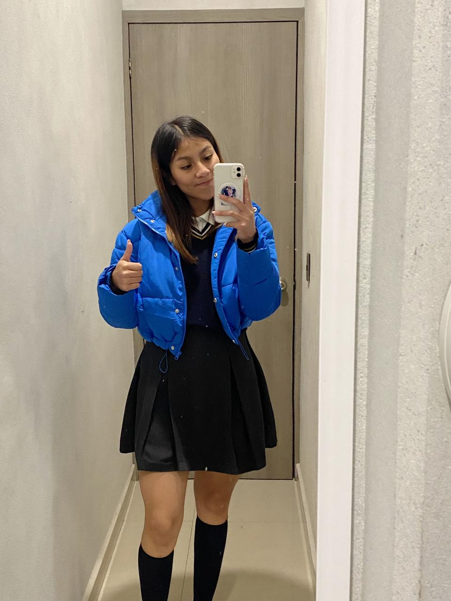

yo Mareli Yaret Mera Flores, nací un 18 de Abril del 2007, en el estado de Ecatepec, desde pequeña eh sido del municipio de apaxco, y comparto el gusto por el deporte desde que tengo memoria, eh ganado medallas, como también premios en distintos lugares, en el deporte de ciclismo principalmente.
Actualmente comparto el gusto por el gimnasio, cursando el segundo año de preparatoria.
